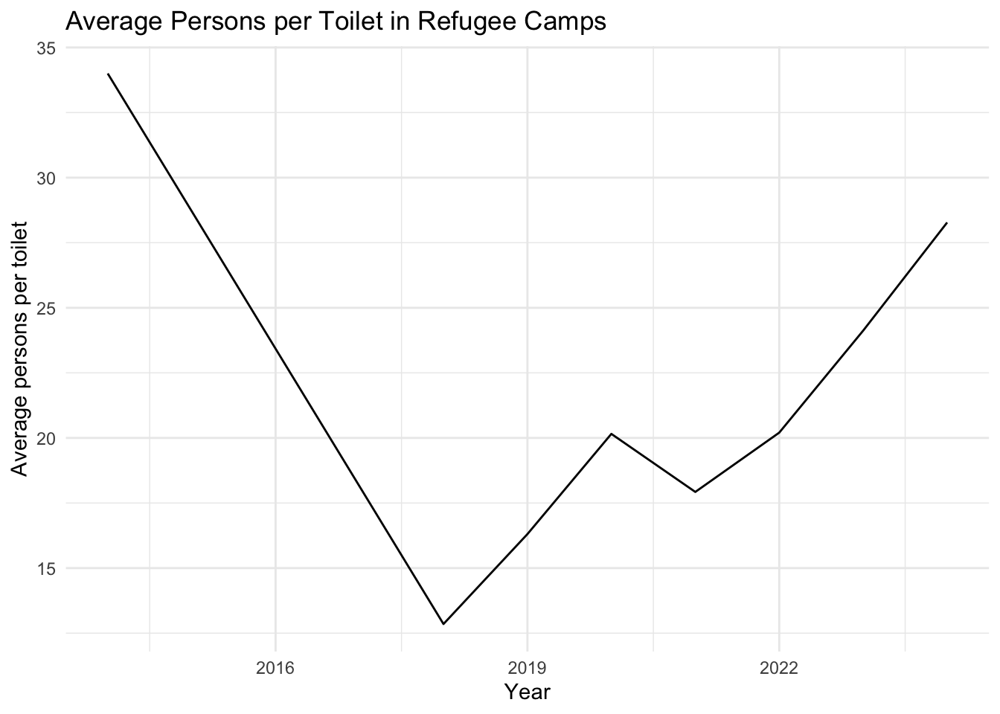

The goal of unhcrwash is to make available data on WASH indicators in refugee camps and settlements.
Installation
You can install the development version of unhcrwash from GitHub with:
# install.packages("devtools")
devtools::install_github("openwashdata/unhcrwash")
## Run the following code in console if you don't have the packages
## install.packages(c("dplyr", "knitr", "readr", "stringr", "gt", "kableExtra"))
library(dplyr)
library(knitr)
library(readr)
library(stringr)
library(gt)
library(kableExtra)Alternatively, you can download the individual datasets as a CSV or XLSX file from the table below.
| dataset | CSV | XLSX |
|---|---|---|
| unhcrwash | Download CSV | Download XLSX |
Data
The package provides access to WASH indicators in refugee camps and settlements
unhcrwash
The dataset unhcrwash contains data about WASH indicators in refugee camps and settlements. It has 6425 observations and 27 variables
unhcrwash |>
head(3) |>
gt::gt() |>
gt::as_raw_html()| form_id | start_date | end_date | location_id | location_name | country | post_emergency | persons_per_handpump | persons_per_tap | liters_per_person_per_day | non_chlorinated_0_cfu | chlorinated_safe_water_quality | households_with_toilet | persons_per_toilet | persons_per_shower | persons_per_hygiene_promoter | refugee_pop | reporting_monthly | liters_per_person_household | potable_water_storage_10l | protected_water_sources | menstrual_hygiene_satisfaction | household_toilet | defecate_in_toilet | access_to_soap | solid_waste_disposal_access | reporting_annual |
|---|---|---|---|---|---|---|---|---|---|---|---|---|---|---|---|---|---|---|---|---|---|---|---|---|---|---|
For an overview of the variable names, see the following table.
| variable_name | variable_type | description |
|---|---|---|
| form_id | double | Unique Identifier for the form |
| date_start | double | Start Date for the data collection |
| date_end | double | End date for the data collection |
| location_id | double | Unique Identifier for the location of the refugee camp |
| location_name | character | Name of the location of the refugee camp |
| country_name | character | Country in which the refugee camp is located |
| emergency_post_emergency | character | If emergency is ongoing or not (Emergency or Post Emergency) |
| number_of_persons_per_usable_handpump_well_spring | double | No. of persons per usable handpump well spring |
| number_of_persons_per_usable_water_tap | double | Number of persons per unit of usable tap water source |
| average_number_liters_of_potable_water_available_per_person_per_day | double | Average number of litres of potable water available per person per day |
| percent_water_quality_tests_at_non_chlorinated_water_collection_locations_with_0_cfu_100ml | double | Percentage of water quality tests conducted at non-chlorinated water collection points that returned results with 0 colony-forming units (CFU) per 100 milliliters |
| percent_of_water_quality_tests_at_chlorinated_collection_locations_with_frc_in_the_range_0_2_2mg_l_and_turbidity_5ntu5 | double | Percentage of water quality tests at chlorinated collection points where the Free Residual Chlorine (FRC) levels were within the range of 0.2 to 2 mg per L, and turbidity was less than or equal to 5 NTU (Nephelometric Turbidity Units) |
| percent_households_with_household_toilet_latrine_monthly | double | Percentage of households that have access to a household toilet or latrine, evaluated on a monthly basis |
| number_of_persons_per_toilet_latrine | double | Number of persons per toilet latrine |
| number_of_persons_per_bath_shelter_shower | double | Number of persons per bath shower |
| number_of_persons_per_hygiene_promoter | double | Number of persons per hygiene promoter |
| refugee_population | double | Refugee Population |
| reporting_period_monthly_indicator | double | Monthly Reporting Period |
| average_number_l_p_d_of_potable_water_collected_at_household_level | double | Average water (litres) collected per household per day |
| percent_households_with_at_least_10_liters_person_potable_water_storage_capacity | double | Percentage of households with at least 10 litres of water storage capacity |
| percent_households_collecting_drinking_water_from_protected_treated_sources | double | Percentage of households collecting water from sheltered and treated sources |
| percent_of_women_of_reproductive_age_who_are_satisfied_with_menstrual_hygiene_management_materials_and_facilities | double | Percentage of women of reproductive age satisfied with facilities for management of menstrual hygiene and waste |
| percent_households_with_household_toilet_latrine | double | Percentage of households with a latrine |
| percent_households_reporting_defecating_in_a_toilet | double | Percentage of households defecating in a toilet |
| percent_households_with_access_to_soap | double | Percentage of households with access to soap |
| percent_households_with_access_to_solid_waste_disposal_facility | double | Percentage of households with access to a waste disposal facility |
| reporting_period_annual_indicator | double | Annual Reporting Period |
Example
library(unhcrwash)
# Average Water Availability by Country
unhcrwash |> dplyr::group_by(country) |>
dplyr::summarise(avg_water_avail = mean(liters_per_person_per_day, na.rm = TRUE)) |>
dplyr::arrange(desc(avg_water_avail)) |>
head(5) |>
gt::gt() |>
gt::as_raw_html()| country | avg_water_avail |
|---|---|
library(ggplot2)
# Toilet availability
unhcrwash |>
dplyr::mutate(year = lubridate::year(as.Date(start_date))) |> # Extract year as whole number
dplyr::filter(!is.na(year) & !is.na(persons_per_toilet)) |> # Remove missing values
dplyr::group_by(year) |>
dplyr::summarise(avg_persons_per_toilet = mean(persons_per_toilet, na.rm = TRUE)) |>
ggplot2::ggplot(aes(x = year, y = avg_persons_per_toilet)) +
ggplot2::geom_line() +
ggplot2::labs(title = "Average Persons per Toilet in Refugee Camps",
x = "Year",
y = "Average persons per toilet") +
ggplot2::theme_minimal()
# Countries with highest refugee populations
unhcrwash |>
dplyr::group_by(country) |>
dplyr::summarise(total_population = sum(refugee_pop, na.rm = TRUE)) |>
dplyr::arrange(desc(total_population)) |>
head(5) |>
gt::gt() |>
gt::as_raw_html()| country | total_population |
|---|---|
License
Data are available as CC-BY.
Citation
Please cite this package using:
citation("unhcrwash")
#> To cite package 'unhcrwash' in publications use:
#>
#> Dubey Y (2024). "unhcrwash: WASH Data From Refugee Camps and
#> Settlements (UNHCR)." doi:10.5281/zenodo.14185117
#> <https://doi.org/10.5281/zenodo.14185117>,
#> <https://github.com/openwashdata/unhcrwash>.
#>
#> A BibTeX entry for LaTeX users is
#>
#> @Misc{unhcrwashwash:2024,
#> title = {unhcrwash: WASH Data From Refugee Camps and Settlements (UNHCR)},
#> year = {2024},
#> author = {Yash Dubey},
#> doi = {10.5281/zenodo.14185117},
#> url = {https://github.com/openwashdata/unhcrwash},
#> abstract = {This is a dataset on WASH indicators in refugee camps and settlements. The data is collected from the UNHCR Information Management System (IRIS) and is available on the UNHCR WASH dashboard. This dataset includes data from 191 sites and 29 countries.},
#> version = {0.1.0},
#> }